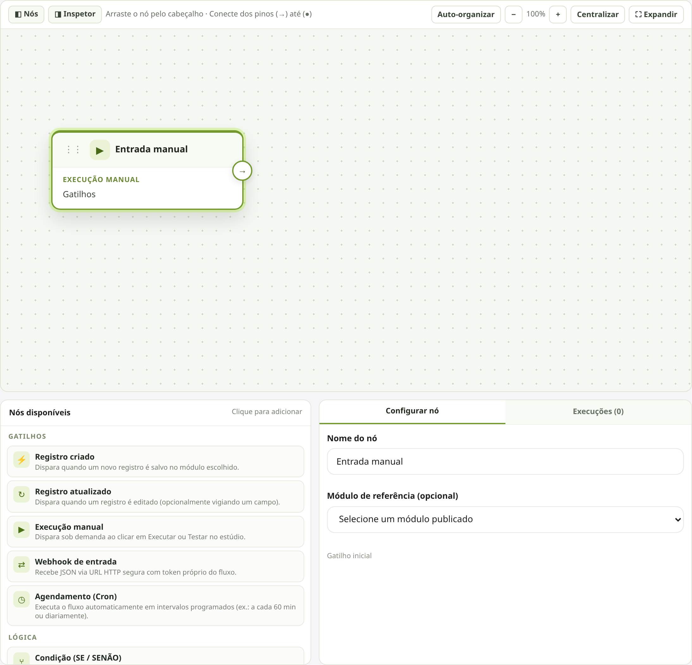
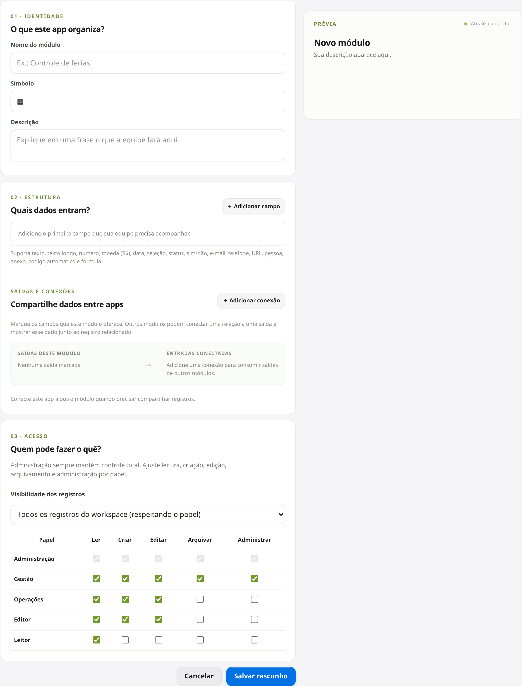

Monte seus apps. Conecte as etapas.
Crie módulos, conecte dados e publique no servidor da sua equipe.

Campos, conexões e acessos no mesmo lugar.
Comece vazio: adicione módulos, conecte dados e defina acessos.
- 15 tipos: moeda, anexo, fórmula e código automático, entre outros.
- Busca, filtros, ordenação, Kanban e calendário conforme os campos.
- Permissões por papel, visibilidade de registros e histórico de auditoria.

Faça os módulos trabalharem juntos.
Crie e teste fluxos com gatilhos, condições, ações e webhooks antes de ativar.
Processos por papel separam etapas e responsáveis, sem alterar instâncias em andamento ao publicar versões.
- Gatilhos
- Condições
- Ações e webhooks
Encontre um módulo para começar.
Filtre por área, pesquise e abra um módulo para ver seus campos.
Carregando o catálogo…
Comece por um pacote integrado.
Pacotes conectam módulos e podem incluir automações e modelos de processo.
Clube esportivo: evidências CBC para revisão interna; envio oficial fora da plataforma.
A IA propõe. Sua equipe decide.
A IA sugere módulos e fluxos; revise e confirme antes de publicar.
- Descreva
- Revise
- Confirme
Use um provedor compatível ou modelo local.
Rode localmente ou com Docker.
Node.js 22+ e SQLite nativo; nenhum banco externo é necessário.
A plataforma requer acesso autorizado; esta vitrine é pública.
Abrir repositórioInstalação local
git clone https://github.com/lucaaregis4r-ops/open-oss.git
cd open-oss
npm install
npm startCom Docker
docker compose up -d